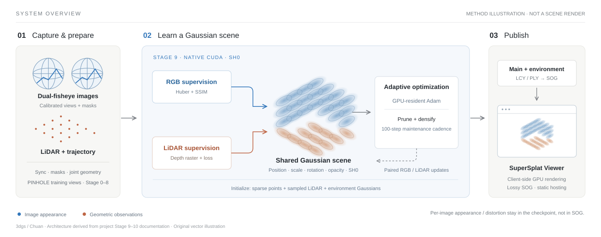

Research preview / Fisheye + LiDAR Gaussian splatting / Validation phase · October 2026
No Pinhole Proxies
Measurement-consistent Gaussian splatting for fisheye–LiDAR rigs
01The gap
Photorealistic, but not metric
Handheld scanners, backpack and vehicle mapping systems and 360° capture rigs all pair wide-angle cameras with a LiDAR. Their users want one model that both looks right and measures right: a digital twin you can walk through and also put a tape measure on.
Gaussian splatting [1] delivered the first half. The second half has lagged. On Oxford Spires [2], whose terrestrial laser scans (TLS) give independent ground truth at 1 cm, the official LiDAR maps reach an F-score at 10 cm of 0.54–0.85 across sequences, while a radiance field trained on the same captures reaches 0.31–0.68.
The camera side has since been repaired. Native fisheye renderers [3] [4] [5] [6] stopped cutting the fisheye into perspective crops, which discarded field of view and resolution. That makes the next question unavoidable: does the geometric gap close once the camera is native and the LiDAR is used as depth supervision?
02Diagnosis
Inverse rendering is not inverse measurement
Robotic mapping treats every reading as a measurement with a forward sensor model, from occupancy grids [10] to TSDF fusion [11]. Radiance fields treat images as rendering targets [12] [1]. With a single camera the two views coincide, because a rendered pixel is the measurement. A LiDAR breaks the symmetry.
The inverse-rendering answer is to manufacture a second rendering proxy so that laser returns become “pixels”. Our own baseline R1, the working system of §07, is a representative example. It replaces each fisheye image with perspective crops rasterised through the affine EWA projection [8], whose error grows off-axis [9], and each LiDAR sweep with a virtual pinhole depth camera at the LiDAR origin (120° field of view, 256 × 256 queries) that renders
Read it from the inside out. z_i is the camera-axis depth of the centre of Gaussian i, \alpha_i\mathcal G_i(q) is how much of its projected 2D footprint covers query q, and T_i(q) is the light that survives the Gaussians in front. The sum is an opacity-weighted average of centre depths, compared with the depth of the measured return through 0.1\log(1+10\,|D_{\mathrm{R1}}-z_{\mathrm{meas}}|).
lidar_raster.cu, image_raster.cu). Code reading, not a measurement.Each row is a different definition of depth applied to the same Gaussians, and they fail in three distinct ways.
Centre, not range
z_i is constant across the footprint, so a 50 cm Gaussian lying obliquely on a wall reports its centre depth to every beam that crosses its edge. The LiDAR measures range along its own beam.
Mean, median, first hit
An expectation, a median and a first surface coexist. A faint floater in front of a wall drags the expectation into empty space long before the median notices.
No push along the beam
Neither depth term differentiates z_i. Geometry can change only by fading Gaussians or sliding footprints sideways, never by moving a Gaussian along the line of sight.
Share the Gaussians, or split them?
Sensor-simulation work already renders both sensors natively, but keeps them apart. SplatAD [13] gives the LiDAR its own spherical rasteriser and renders expected range in training but median range at inference; Uni-Gaussians [14] rasterises cameras and ray-traces LiDAR; XSIM [15] gives each Gaussian one opacity per sensor. SimULi [17], the closest work, supports fisheye cameras and arbitrary spinning LiDARs in one framework, observes that a single set of Gaussians trades PSNR against LiDAR accuracy as the depth-loss weight varies, and therefore splits the scene into a camera set and a LiDAR set tied by an anchoring loss.
Those are dynamic driving simulators graded against the sensors themselves. For static metric reconstruction graded against independent TLS, we ask the opposite question: is the trade-off intrinsic to sharing one set of Gaussians, or an artefact of supervising two sensors through inconsistent measurement models?
03Contribution 1 · One ray model
A fisheye pixel and a LiDAR beam are the same object
Treat every reading as what it physically is: a ray with its own origin and direction.
\pi_c is the calibrated fisheye model (equidistant on Oxford Spires). The whole valid image circle is used at native resolution and never resampled; there is no crop and no virtual depth camera.
Where a ray meets a Gaussian
One termination depth for both sensors
Sort the contributions by \tau^*, follow the transmittance down the ray, and stop at the first Gaussian after which at most half of the light is left. Its peak is the termination depth. A ray whose final transmittance stays above one half is a no-hit. Both sensors use this one number.
A gradient that pushes along the beam
The identity on the right is the intuition: slide the terminating Gaussian one centimetre along the beam, and its termination depth slides one centimetre. A range residual therefore moves geometry along the line of sight, which repairs mismatch iii. For a flat Gaussian, \Sigma^{-1}\bd points mostly along its normal, so the push goes through the surface rather than across it.
What the LiDAR is asked to explain
\psi_\delta is a Huber penalty and T(\tau) the transmittance accumulated up to range \tau. The first term asks the beam to terminate where it returned. The second asks that the space the laser has just crossed is empty up to a noise margin \kappa\sigma_\rho, the line-of-sight idea of Urban Radiance Fields [22]. A beam without a return may optionally be asked to stay empty, 1-T(\tau_{\max}). The camera keeps \mathcal L_{\mathrm{rgb}}=(1-\lambda)\lVert C-\hat C\rVert_1+\lambda\,\text{D-SSIM} with a per-exposure affine colour correction, and has no depth loss of its own: the LiDAR already shapes the surface that the camera rays composite.
| Ingredient | Prior work | Claimed here |
|---|---|---|
| Fisheye pixels as rays at native resolution | Fisheye-GS [3], 3DGUT [4], DirectFisheye-GS [5], 3DGEER [6] | No |
| Exact ray–Gaussian response | 3DGRT [7], 3DGEER [6] | No |
| Median termination depth, T=\tfrac12 | 2DGS [18], GS-LiDAR [19], SplatAD [13], Geometry-Grounded GS [20] | No |
| LiDAR as a ray measurement with free space | DS-NeRF [21], Urban Radiance Fields [22] | No |
| Both sensors on one set of Gaussians through one termination depth, tested against the loss-weighting trade-off | None: SimULi and XSIM split the sensors instead | Yes, as a hypothesis |
| Method | Venue | Camera | LiDAR | How the sensors are kept apart | Graded against |
|---|---|---|---|---|---|
| SplatAD [13] | CVPR 2025 | pinhole raster | separate spherical raster | two rasterisers; expected range in training, median at inference | the sensors |
| Uni-Gaussians [14] | arXiv 2025 | raster | ray tracing with a BVH | two renderers | the sensors |
| XSIM [15] | arXiv 2026 | 3DGUT, rolling shutter | spherical projection | one opacity per sensor on each Gaussian | the sensors |
| UniGaussian [16] | arXiv 2024 | pinhole + fisheye | supervision only | LiDAR is not rendered | images |
| SimULi [17] | ICLR 2026 | 3DGUT, fisheye-capable | same rasteriser, any spinning LiDAR | two Gaussian sets tied by an anchoring loss | the sensors, dynamic driving |
| C1 (this work) | — | exact ray, native fisheye | exact ray | not kept apart: one ray model, one \tau_{\mathrm{term}} | independent TLS, static scenes |
04Contribution 2 · Evidence-gated optimisation
Where the LiDAR has measured, geometry is a constraint, not a loss
The usual way to give a radiance field geometry is to add a loss: distortion [24], normal and planarity terms [18] [23], depth and line-of-sight terms [21] [22]. Every one comes with a weight, and a weight picks one point on a trade-off:
For a fixed \lambda, the minimiser is where a straight line of slope -\lambda first touches the set of achievable (f_{\mathrm{geo}},f_{\mathrm{rgb}}) pairs. Sweeping \lambda rolls that line around the set, so it only ever touches the convex hull; any stretch of the front that bulges outward is unreachable at every weight [25]. A constraint, \min f_{\mathrm{rgb}}\ \text{s.t.}\ f_{\mathrm{geo}}\le\varepsilon, has no such blind spot. And a loss never removes a degree of freedom: the normal direction of a measured surface stays available to the photometric gradient, which can still buy appearance by moving the surface.
Evidence, counted along the same rays
Because both sensors now reach the same Gaussians through \tau_{\mathrm{term}}, the LiDAR pass can attribute every return. For each beam with a return \rho, Gaussian i accumulates
- Hit h_i: the Gaussian is the surface the beam returned from.
- Violation f_i: it blocks space the beam has proved empty, weighted by how much light it took.
- Observation n_i: the beam reached it at all.
Every 100 steps an exponential moving average of (h_i,f_i,n_i) assigns one of three states:
Anything else is treated as unobserved at a reduced learning rate.
The gate
For an anchored Gaussian with normal \bn_i (its shortest axis), the LiDAR’s own update is left unchanged and the photometric update of its position is projected onto the tangent plane. I-\bn\bn^\top keeps every motion along the surface and deletes motion through it: appearance may still slide a Gaussian along the wall, but may no longer pull it off. Its normal scale is clamped to the sensor noise (\sigma_\rho\approx 3 cm for the Hesai QT64), its rotation is bounded per step, and it is split only within the tangent plane. A contradicted Gaussian has its opacity decayed and is pruned below a threshold; it is never cloned. An unobserved Gaussian is optimised and densified exactly as in 3DGS.
The closest work, and the prediction that separates us
EnerGS [26] already labels LiDAR evidence in three states and already decouples Gaussian positions from the photometric loss, so neither idea is new here. The difference is granularity and where the evidence comes from:
| EnerGS [26] | C2 (this work) | |
|---|---|---|
| Evidence | LiDAR voxel grid: occupied, free, unknown | per-ray counts from the termination depth shared with the camera |
| When computed | once, at initialisation | every 100 steps, during training |
| What the photometric loss may move | no Gaussian centre, anywhere | everything except the normal of anchored Gaussians |
| Where the LiDAR is silent | a weak attractor, about 1/16 of the occupied stiffness in the official defaults; positions stall | ordinary photometric optimisation |
| Densification | photometric | evidence-aware: in-plane split; contradicted never cloned |
| Camera · ground truth | pinhole · voxel metrics | native fisheye · independent TLS |
Other work constrains rather than reweights, but coarsely or with another signal. GeoP-Calib [27] stops photometric gradients to all means and covariances during extrinsic calibration; Peng et al. [28] constrain camera parameters with barriers; DirectFisheye-GS’s cross-view optimisation [5] constrains Gaussians with photometric agreement between views, photometry restraining photometry. The gate acts per Gaussian and per degree of freedom, only where a measurement exists.
05Contribution 3 · Implementation
Faithful, at no extra cost
Exact ray methods are usually assumed to be slow: 3DGRT [7] builds a BVH, and 3DGEER [6] showed that exact responses can approach rasterisation speed without one. Our trainer already carries most of the rasterisation lineage’s accelerations: GPU-resident structure-of-arrays storage, tile binning with warp-cooperative duplication, radix sorting, a selective Adam that updates only visible Gaussians [29], fused SSIM and a warp-shuffle backward pass. The claim of C3 is deliberately narrow: C1 and C2 do not need to remove any of them.
Why the exact response is cheap
Everything in \tau^* and D^2 that does not depend on the pixel is computed once per Gaussian and sensor origin, next to the 3D covariance that preprocessing already builds:
For each pixel–Gaussian pair only two dot products and a division remain:
With \Sigma_i^{-1} symmetric and the six products d_jd_k of a pixel’s direction formed once outside the Gaussian loop, q is six fused multiply-adds. The cost that does grow is the number of pixels: a native Oxford fisheye frame carries about 2.9× the pixels of the official pinhole proxy. We expect that, not the response, to dominate any slowdown; this is a derivation, not a measurement.
Related accelerations are credited rather than claimed: Taming 3DGS [29] for budgets and sparse Adam, Faster-GS [30] for the restructured backward pass and fused optimiser, StopThePop [31] for sorting. Unlike SplatAD [13], the LiDAR reuses the camera’s binning and response instead of a second rasteriser.
06Validation
Four questions, each with the answer that would stop us
Validation runs on one site before anything is scaled: Oxford Spires Keble-04 [2], to our knowledge the only public dataset that combines fisheye colour cameras (three 1440 × 1080 equidistant), a synchronised mobile LiDAR (Hesai QT64) and independent survey-grade geometry (TLS at 1 cm). Every method trains on one RTX 5090 at equal wall-clock with three seeds, uses the same per-exposure appearance model, keeps poses and distortion fixed, and is scored identically: about 46 training runs in all.
Fix the instruments before reading any number
Two items repair the baseline itself and are never counted as gains: pass the transmittance and termination outputs the LiDAR kernel already computes into the trainer, and make its normalisation match the camera branch.
- Freeze first-surface extraction for all methods.
- Run the official TLS evaluation and reproduce one published row as a self-check.
- Build the input-LiDAR accumulation and the blind-region mask.
- Unify the protocol; turn on the trainer’s existing profiling tags.
- Adapt 3DGUT+L: gsplat’s unscented-transform path [32] on the raw fisheye with a valid mask, LiDAR initialisation and a depth loss.
- Runs
- 0
- Output
- a ruler every later table uses
Does the gap survive a native camera?
The cheapest experiment and the one that can veto everything. Rows: input LiDAR (the training scans, not trained), R1 (our proxy pipeline), 3DGUT+L (native fisheye plus LiDAR depth loss, the “camera is already fixed” explanation).
Pass if the input LiDAR beats the better splatting row by at least 0.03 F@5 cm, beyond the bootstrap interval.
If it fails, the metric claim is withdrawn and the work is re-scoped to fisheye fidelity and efficiency.
- Runs
- 6
- Table
- Acc, Comp, F@5, F@10, blind completeness, PSNR in / out
Does one ray model move off the trade-off curve?
Loss weighting moves a method along a curve: more LiDAR weight buys F-score with PSNR, as SimULi reports. So the two cheap explanations, 3DGUT+L and R1+∂D/∂z (restore only the missing gradient), are each traced at LiDAR weights ×0.3, ×1 and ×3. Against them: the camera half and the LiDAR half (one proxy replaced each), and full C1 at thresholds 0.3, 0.5 and 0.7.
Pass if C1 beats the better cheap explanation by more than one seed standard deviation in out-of-sequence PSNR, or by at least 0.02 F@5 cm, and lies outside both curves. “Unification” is claimed only if C1 also beats the better half; otherwise the text names the half that carries the gain.
If it fails, C1 becomes an implementation choice and C2 leads the paper.
- Runs
- about 24, reusing Q1’s six
- Figure
- PSNR out vs. F@5, curves vs. points
Does the gate beat a loss, and beat EnerGS?
All built on C1 with the same appearance model, so the only difference is how LiDAR evidence enters the optimiser: a soft range loss at λ ∈ {0.1, 0.3, 1, 3}, EnerGS reimplemented in our renderer with its official defaults including global zeroing, and C1+C2.
Test A: at C2’s F@5, the soft-loss front’s PSNR is lower beyond the interval. Test B: C2’s blind-region completeness beats EnerGS’s by more than one seed standard deviation.
Both pass: C2 leads. Only A: an engineering choice on top of C1. Only B: the claim becomes blind-region completion. Neither: a good operating point, not a contribution.
- Runs
- about 10
- Figure
- soft-loss front, EnerGS, C2; blind-region inset
Does measurement consistency cost time?
R1, C1 and C1+C2, three runs each on the same card; per-step time split by the trainer’s profiling tags, I/O reported separately. New kernels must first pass finite-difference gradient checks on synthetic scenes.
Pass: time to reach both R1’s final out-of-sequence PSNR and its final F@5 is at most 1.2× R1 (“no extra cost”); at most 1.0× is “faster”, stated with Gaussian counts.
If it fails, re-measure with pixels per step matched to R1, then report the slowdown honestly as an implementation detail.
- Runs
- 9, partly shared
- Table
- raster forward / backward / other, step, time to target, #Gaussians
07Where we start
A complete baseline system: the R1 of every table
The proxy pipeline that this page criticises is our own working system. Stages 0–10 run from raw dual-fisheye and LiDAR captures to a Gaussian scene in the browser. Stage 8 projects each fisheye image into three 1024 × 1024, 90° pinhole views; Stage 9 trains SH0 Gaussians with paired RGB and LiDAR updates on a native CUDA backend whose parameters and Adam state stay GPU-resident [P1] [P4]. It is fast, and it is the baseline every contribution has to beat.

One complete run, 133957, went through Stages 0–10 from raw inputs between 2 and 3 October 2026 [P3].
PSNR on the same training views
The toned branch applies learned per-image appearance.
| Output | PSNR ↑ | SSIM ↑ |
|---|---|---|
| Raw RGB | 19.8594 | 0.777927 |
| Toned RGB | 25.3347 | 0.809903 |
7,770 views · frozen checkpoint
Recorded training time: approximately 1,489 s.
Upstream, in briefWhat happens before Gaussian training?
Stages 0–4 handle decoding, dynamic-point filtering, synchronisation, image/pose pairing and person masks. Stages 5–7 perform feature matching, triangulation and joint visual–LiDAR geometry optimisation. Stage 8 projects each fisheye image into three 1024 × 1024, 90° pinhole views, which are different from Stage 5’s five-view feature-extraction projections. Stage 9 consumes the prepared views with the filtered LiDAR map and trajectory. [P4]
Delivery, in briefHow does a trained scene reach the browser?
Stage 10 merges the main and environment Gaussians, writes standard little-endian Gaussian PLY, converts it to the official SOG format and emits a self-hostable SuperSplat viewer. SOG quantises attributes and does not carry the checkpoint’s per-image appearance or distortion, so browser quality needs its own evaluation. The documented transform is (x, y, z) → (−x, z, y), with the initial camera transformed consistently. [P2]
08Explore scenes
Step inside a Gaussian scene
Choose a published example, or open a Gaussian PLY from your device. The model is rendered here in the browser. Local files stay on your device and are not uploaded.
No model loaded.
Examples are added manually. No reconstruction result is preloaded or simulated.
Drag to orbit · right-drag to pan · scroll to zoom. Click inside the viewer before using its keyboard controls. Large PLY files can require substantial browser memory.
Open a model link
Add your own published examples
Place an authorised model in website/examples/your-scene/scene.ply, then add its name and URL to website/examples/scenes.json. Push to main to publish it.
Example configuration and model preparation ↗
Opening a local file only previews it in this browser; it does not publish it for other visitors.
09Scope
What this page does and does not show
- A diagnosis read from our baseline’s code and from published numbers.
- Three contributions with their mathematics, the prior work each builds on, and the one thing each claims.
- The experiments, pass rules and fall-backs that will decide each claim.
- A working baseline system and one recorded run on our own rig.
- Any result of C1, C2 or C3; nothing here has been run yet.
- Any comparison against another method.
- Held-out or geometric quality of the recorded run.
Known limitations
- Calibration and timing. One shared set of Gaussians must absorb residual extrinsic and timing errors between the sensors. SimULi attributes the camera–LiDAR trade-off precisely to such errors [17]; a static handheld rig does not escape this merely by being static. Sensitivity to extrinsic and time perturbations will be reported.
- LiDAR physics. Beam divergence, multiple returns, glass and specular surfaces violate a single termination, and one threshold may not suit both sensors; only three values are tested.
- Ordering. Responses are exact per Gaussian, but the order along a ray follows a per-Gaussian sort key.
- Scope. Static scenes with given poses. Dynamic objects, sensor simulation (intensity, ray drop) and pose estimation are out of scope.
- Evidence. Validation is single-site. Generality across sites, LiDAR models and fisheye models is still to be shown.
—References
Sources
- Kerbl, Kopanas, Leimkühler, Drettakis. 3D Gaussian Splatting for Real-Time Radiance Field Rendering. ACM TOG (SIGGRAPH) 2023.
- Tao et al. The Oxford Spires Dataset: Benchmarking Large-Scale LiDAR-Visual Localisation, Reconstruction and Radiance Field Methods. IJRR 2025.
- Liao et al. Fisheye-GS: Lightweight and Extensible Gaussian Splatting Module for Fisheye Cameras. arXiv 2024.
- Wu et al. 3DGUT: Enabling Distorted Cameras and Secondary Rays in Gaussian Splatting. CVPR 2025.
- Yang et al. DirectFisheye-GS: Enabling Native Fisheye Input in Gaussian Splatting with Cross-View Joint Optimization. CVPR 2026.
- Huang et al. 3DGEER: 3D Gaussian Rendering Made Exact and Efficient for Generic Cameras. ICLR 2026.
- Moënne-Loccoz et al. 3D Gaussian Ray Tracing: Fast Tracing of Particle Scenes. ACM TOG (SIGGRAPH Asia) 2024.
- Zwicker, Pfister, van Baar, Gross. EWA Volume Splatting. IEEE Visualization 2001.
- Huang et al. On the Error Analysis of 3D Gaussian Splatting and an Optimal Projection Strategy. ECCV 2024.
- Moravec, Elfes. High Resolution Maps from Wide Angle Sonar. ICRA 1985.
- Newcombe et al. KinectFusion: Real-time Dense Surface Mapping and Tracking. ISMAR 2011.
- Mildenhall et al. NeRF: Representing Scenes as Neural Radiance Fields for View Synthesis. ECCV 2020.
- Hess et al. SplatAD: Real-Time Lidar and Camera Rendering with 3D Gaussian Splatting for Autonomous Driving. CVPR 2025.
- Yuan et al. Uni-Gaussians: Unifying Camera and Lidar Simulation with Gaussians for Dynamic Driving Scenarios. arXiv 2025.
- Patakin et al. Unified Sensor Simulation for Autonomous Driving (XSIM). arXiv 2026.
- Ren et al. UniGaussian: Driving Scene Reconstruction from Multiple Camera Models via Unified Gaussian Representations. arXiv 2024.
- Turki et al. SimULi: Real-Time LiDAR and Camera Simulation with Unscented Transforms. ICLR 2026.
- Huang, Yu, Chen, Geiger, Gao. 2D Gaussian Splatting for Geometrically Accurate Radiance Fields. SIGGRAPH 2024.
- Jiang et al. GS-LiDAR: Generating Realistic LiDAR Point Clouds with Panoramic Gaussian Splatting. ICLR 2025.
- Zhang et al. Geometry-Grounded Gaussian Splatting. arXiv 2026.
- Deng, Liu, Zhu, Ramanan. Depth-supervised NeRF: Fewer Views and Faster Training for Free. CVPR 2022.
- Rematas et al. Urban Radiance Fields. CVPR 2022.
- Chen et al. PGSR: Planar-Based Gaussian Splatting for Efficient and High-Fidelity Surface Reconstruction. IEEE TVCG 2024.
- Barron et al. Mip-NeRF 360: Unbounded Anti-Aliased Neural Radiance Fields. CVPR 2022.
- Das, Dennis. A Closer Look at Drawbacks of Minimizing Weighted Sums of Objectives for Pareto Set Generation in Multicriteria Optimization Problems. Structural Optimization 1997.
- Song et al. EnerGS: Energy-Based Gaussian Splatting with Partial Geometric Priors. ICML 2026.
- Kwak et al. Geometry-Preserving in 3D Gaussian Splatting for LiDAR-Camera Extrinsic Calibration. ECCV 2026 (accepted manuscript).
- Peng et al. A Constrained Optimization Approach for Gaussian Splatting from Coarsely-posed Images and Noisy LiDAR Point Clouds. ICCV 2025.
- Mallick et al. Taming 3DGS: High-Quality Radiance Fields with Limited Resources. SIGGRAPH Asia 2024.
- Hahlbohm et al. Faster-GS: Analyzing and Improving Gaussian Splatting Optimization. CVPR 2026.
- Radl et al. StopThePop: Sorted Gaussian Splatting for View-Consistent Real-time Rendering. ACM TOG (SIGGRAPH) 2024.
- Ye et al. gsplat: An Open-Source Library for Gaussian Splatting. JMLR 2025.
- Zhang et al. RaDe-GS: Rasterizing Depth in Gaussian Splatting. ACM TOG 2026.
- Yu, Sattler, Geiger. Gaussian Opacity Fields: Efficient Adaptive Surface Reconstruction in Unbounded Scenes. ACM TOG (SIGGRAPH Asia) 2024.
Project sources
- Stage 9 — native CUDA SH0 training ↗Initialisation, paired supervision, maintenance, image corrections and limitations.
- Stage 10 — SOG & SuperSplat delivery ↗Encoding, coordinate conversion and publishing boundaries.
- Run 133957 — full-pipeline completion record ↗Source of every run count, size, runtime and score in §07.
- Project overview & stage contracts ↗Sensor preparation and visual–LiDAR geometry before Gaussian training.
- Paper draft, “No Pinhole Proxies” ↗Method, protocol and placeholders; every result is still pending.
- Research plan, contributions and validation plan ↗Causal chain, prior-art checks, kill criteria and code-level evidence.
The project repository may require access; this page is public. The native training backend reuses a pinned 3dgs_CUDA revision, documented in its provenance file. Viewer runtime: SuperSplat Viewer. Math typesetting: KaTeX, self-hosted. Editorial pacing inspired by Mem2Gen; page code and figures are original.